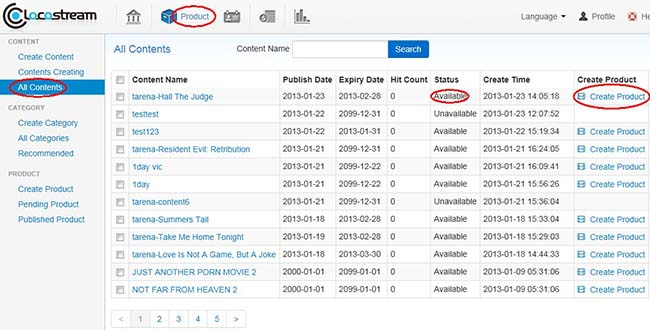

Help
Product Management
There are four ways to create a product, quick to create a product, create a product directly, clone a product and make a companion product.
After creating a product, the product needs to be reviewed. Once the product is on shelf, it is not allowed to be edited. So you must be careful to review the product before on shelf.
- 1 Create Product
-
System support many ways to create product, for example: quick to create product or create product directly or clone a product or make companion product.
There are three ways to create a simple product:
1. Create a simple product in product management.
2. Clone a simple product in product management.
3. Create a simple product from content.
There are three ways to create a complex product:
1. Create a complex product in product management.
2. Clone a complex product in product management.
3. According to the product to make Companion complex product.
The following list is the way to create product:
Create type / Product type Simple Product Complex Product Create from Conten √ Create in Product Management √ √ Clone Product √ √ Companion Product √
-
(1). Create Product in Product Management
-
There are six steps to create a product directly:
1. From the Title Product to the product manage page and click Create Product button, open a dialog box;
2. Select product type, create simple or complex product; a) Select "simple" means to create simple product, it's no necessary to input product name and description. The default setting inherit the content information; b) Select "complex" means to create a complex product, need to define the product name and description.
3. Add product content. Simple product can add one content and complex product could add one or more contents;
4. Select the rate. If it's a simple product, you can select Per Purchase Rate; if it's a complex product, you can select not only Per Purchase but also Per Month Rate;
5. Select publishing region. Only subscribers belongs to the selected region can see the product; (This feature will be supported in next version.)
6. Define the on-shelf and off-shelf date of product. The default on-shelf date of simple product is the pubish date of its content, and the default off-shelf date of simple product is the expiry date of its content.
-
(2). Clone Product
-
You can clone a product as follows. From the product detail page and click Clone Product button, a new product will be created. The new clone product has the same attribution except the identity of product. The new clone product will be listed in Pending Product.
-
(3). Create Simple Product from a Content
-
When creating a simple product, you can quickly create a simple product from the All Contents list.
From the page of All Contents, if content status is available then click buttonCreate Product, open create product dialog box, select product rate, region and on/off shelf date, quick to create a simple product.

Notice: If content has been deleted and its status is unavailable, the content is not allowed to be assigned to a product.
-
(4). Create Complex Companion Product
-
Companion Product is a sub-product sharing same attributes with its parent, except the Rate which can be further customized. This is useful when you need to create multiple similar products with different Rates.
-
2. Review Product
-
Product must be reviewed ahead of being on shelf. Once passing the review, it's not allowed to be edited.